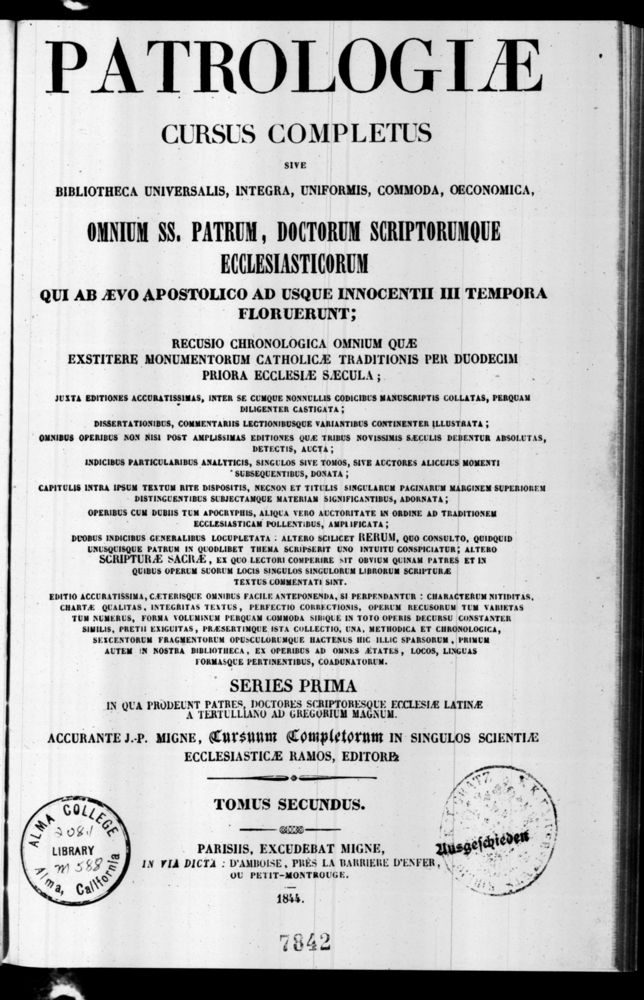
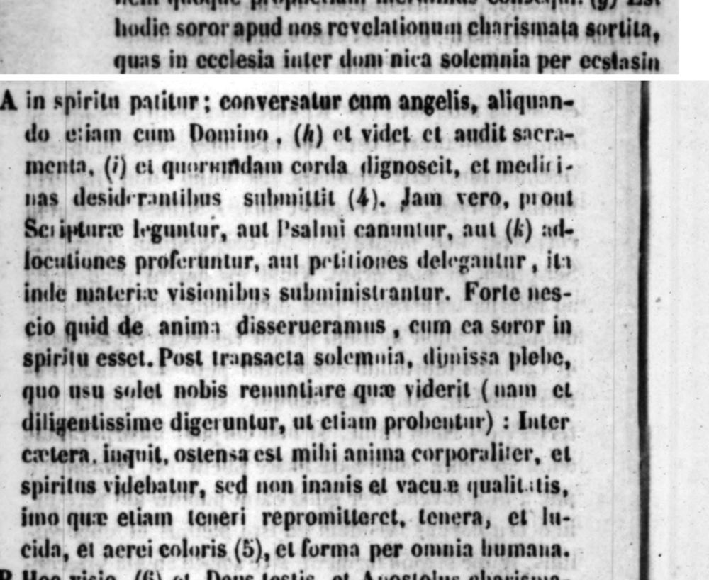

Chapter 7: The Corporeality of the Soul in the Gospel
Latin: Migne, PL 2, col. 656 (right column, foot, scan), De anima VII. Spelling regularised. The second line is the start of a new chapter (“Caput VII”). Highlighted: the words Lecky quotes.

So much for the philosophers; as for our own people, more than enough, to whom the corporeality of the soul will shine out in the Gospel itself. The soul of a certain man grieves in the underworld, is punished in the flame, and is tormented in the tongue, and begs for the solace of a drop of dew from the finger of a happier soul. Do you suppose that the departure of that poor man rejoicing was only an image …
Original Latin
Quantum ad philosophos, satis haec; quia quantum ad nostros, ex abundanti, quibus corporalitas animae in ipso Evangelio relucebit. Dolet apud inferos anima cuiusdam, punitur in flamma, et cruciatur in lingua, et de digito animae felicioris implorat solatium roris. Imaginem existimas exitum illum pauperis laetantis …
Doubtful points
“Imaginem existimas exitum illum pauperis laetantis” is cut by the page edge; I give its start only. “Ex abundanti” I take as “over and above”. Lecky’s reference is “cap. vii.”, which is right for this edition. The surrounding argument (that the soul’s torment in the tongue requires a body) is Tertullian’s own, but I have only read these lines.
Lecky’s Quotation Compared
| Lecky, 1865 | Migne |
|---|---|
| ‘Corporalitas animæ in ipso evangelio relucebit. Dolet apud inferos anima cujusdam et punitur in flammâ et cruciatur in linguâ et de digito animæ felicioris implorat solatium roris.’ | … quibus corporalitas animae in ipso Evangelio relucebit. Dolet apud inferos anima cuiusdam, punitur in flamma, et cruciatur in lingua, et de digito animae felicioris implorat solatium roris. |
Lecky starts the sentence at “Corporalitas”, omitting the relative “quibus” (so his version reads as an independent statement), and has “et punitur” where Migne has an asyndeton, “punitur”. His “flammâ”, “linguâ” are the ablative circumflexes of older printings. Otherwise the words are identical.
Chapter 9: a soul seen in a vision
Latin: Migne, PL 2, De anima c. IX, cols. 659–660, scan n331; the facsimile joins the foot of col. 659 to the top of col. 660. Migne’s note letters and figures omitted. Highlighted: what Lecky’s text gives.

There is among us today a sister who has been granted gifts of revelation, which she experiences in the spirit, in ecstasy, in church during the Sunday rites. She converses with angels, sometimes even with the Lord; she sees and hears mysteries, reads the hearts of some, and gives remedies to those who want them. And as the Scriptures are read, or psalms sung, or sermons preached, or prayers offered, so matter is supplied to her visions. It happened that we had been discoursing on the soul, I forget what, when this sister was in the spirit. After the rites were over and the people dismissed, she told us, as she usually does, what she had seen (for these things are most carefully examined, so that they may also be tested). Among other things, she said, a soul was shown to me in bodily form; it seemed a spirit, but not of an empty and hollow quality; rather, one that promised it could even be held: delicate, and lucid, and the colour of air, and in form human in every respect.
Translation: this edition’s draft.
Original Latin
Est hodie soror apud nos revelationum charismata sortita, quas in ecclesia inter dominica solemnia per ecstasin in spiritu patitur; conversatur cum angelis, aliquando etiam cum Domino, et videt et audit sacramenta, et quorumdam corda dignoscit, et medicinas desiderantibus submittit. Jam vero, prout Scripturæ leguntur, aut Psalmi canuntur, aut adlocutiones proferuntur, aut petitiones delegantur, ita inde materiæ visionibus subministrantur. Forte nescio quid de anima disserueramus, cum ea soror in spiritu esset. Post transacta solemnia, dimissa plebe, quo usu solet nobis renuntiare quæ viderit (nam et diligentissime digeruntur, ut etiam probentur): Inter cætera, inquit, ostensa est mihi anima corporaliter, et spiritus videbatur, sed non inanis et vacuæ qualitatis, imo quæ etiam teneri repromitteret, tenera, et lucida, et aerei coloris, et forma per omnia humana.
Lecky’s “a transparent and lucid figure in the perfect form of a man” is a free rendering of the last clause; “transparent” stands for “of the colour of air”. In his note 167 he remarks that the book was written after Tertullian became a Montanist; the sister’s ecstatic gifts are of the kind the Montanists prized.
Editor’s notes on this page
Lecky argues in Chapter III that the early Fathers thought of the soul as material, and cites Tertullian: “Corporalitas animæ in ipso evangelio relucebit. Dolet apud inferos anima cujusdam, et punitur in flammâ et cruciatur in linguâ et de digito animæ felicioris implorat solatium roris.” These are the first sentences of chapter 7 of De anima, where Tertullian turns from the philosophers to the Christians’ own proof, the story of the rich man and Lazarus (Luke 16).
Lecky’s Latin is the passage with one word dropped and one added: he omits “quibus” (“to whom”, joining the sentence to the previous one) and has an extra “et” before “punitur”. The sense is unchanged. See the comparison.
Further down the rabbit hole
Sources that Lecky cites in the notes next to the ones that cite this page.
- Cudworth, The True Intellectual System of the Universe, with Mosheim’s notesDid the early Fathers think the soul had a body? Origen, ghosts and Mosheim’s notes
- Maury, Essai sur les légendes pieuses du moyen âgeThe stag that sucks serpents out of their holes, and the angel who carried the star of Bethlehem
- Didron, Iconographie chrétienneHow medieval art pictured Christ the Judge
- Hallam, Literature of Europe and Constitutional HistoryHow Lecky quotes Hallam on persecution
- Plato, PhaedoWhy ghosts haunt graves: souls still heavy with the body
- Agobard, Liber de imaginibusLecky’s five Agobard quotes checked against Baluze


Backlinks
Every place in Rationalism in Europe that links to this page (generated automatically when the site is built).